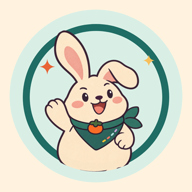
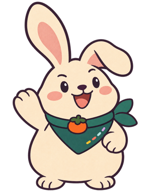

🎵 Letter sound songs
Short phonics songs teach each letter sound with one picture word: S for sun, A for apple, T for tiger, P for pen, I for insect, N for nose and M for mouse. Then kids blend sounds into little words like sit and pin.


Sing letter sound songs, watch phonics videos, then trace every letter from A to Z. Free, colorful and fun from the very first words.
Letter sound songs and phonics lessons from our YouTube channel. New videos are added every week!
Tap any card to hear the letter and its sound, or tap Trace to practice!
0 of 26 Stickers Unlocked! 🌟
Short phonics songs teach each letter sound with one picture word: S for sun, A for apple, T for tiger, P for pen, I for insect, N for nose and M for mouse. Then kids blend sounds into little words like sit and pin.
Trace every letter from A to Z in uppercase and lowercase. Numbered start dots, arrows and a "Watch Me" demo show the right stroke order on a simple 4-line handwriting guide.
Tap a card to hear the letter, its sound and a word. Play the letter quiz, collect stars and unlock a sticker for every letter.
Free to use at home or in the classroom, on phones, tablets and computers. No ads, no sign-up. Videos play from our YouTube channel, English with Ms Tuyen.